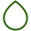

item.estufa
item.tempºc
item.horario

item.umidade%
item.localizacao
item.tempºc
item.horario
item.umidade%
item.localizacao
ID: {{ channel?.id }}
Nome: {{ channel?.name }}
Latitude: {{ channel?.latitude }}
Longitude: {{ channel?.longitude }}
Campo 1: {{ channel?.field1 }}
Campo 2: {{ channel?.field2 }}
Campo 3: {{ channel?.field3 }}
Criado em: {{ channel?.created_at | date: 'medium' }}
Atualizado em: {{ channel?.updated_at | date: 'medium' }}
Último ID de Entrada: {{ channel?.last_entry_id }}
| Data de Criação | ID da Entrada | Campo 1 Temperatura do ar | Campo 2 Umidade do ar | Campo 3 Umidade do solo |
|---|---|---|---|---|
| {{ feed.created_at | date: 'medium' }} | {{ feed.entry_id }} | {{ feed.field1 }} | {{ feed.field2 }} | {{ feed.field3 }} |